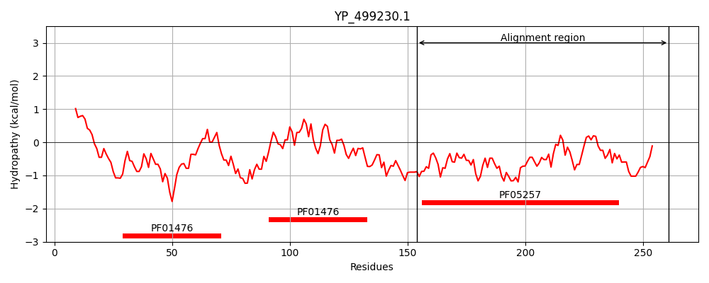
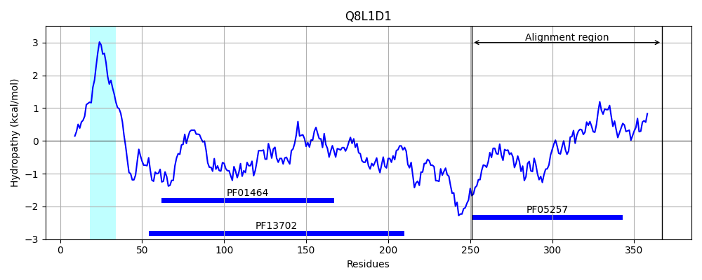
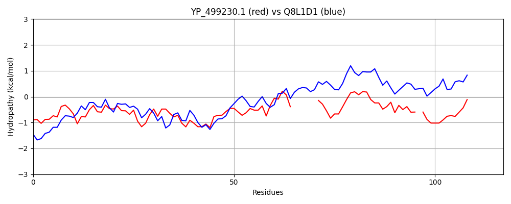

Hit Accession: Q8L1D1
Hit TCID: 3.A.7.14.1
Hit Description: gnl|BL_ORD_ID|16488 gnl|TC-DB|Q8L1D1|3.A.7.14.1 Putative uncharacterized protein - Enterococcus faecalis (Streptococcus faecalis).
Mach Len: 117
e:0.000000
Query TMS Count : 0
Hit TMS Count: 1
TMS-Overlap Score: 0.000000
Predicted Substrates:CHEBI:4291;deoxyribonucleic acid
BLAST Alignment:
| Protein Hydropathy Plots: | |
|---|---|
|  |  |
Pairwise Alignment-Hydropathy Plot: | |
|  | |